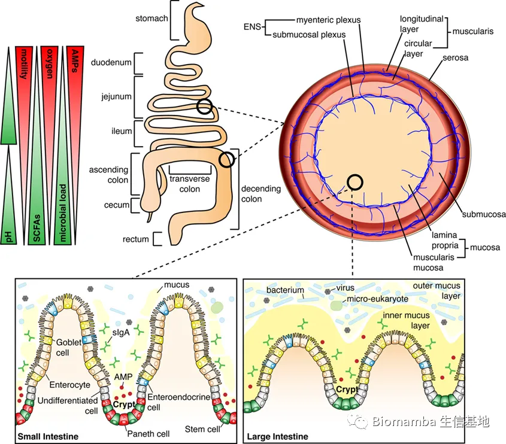
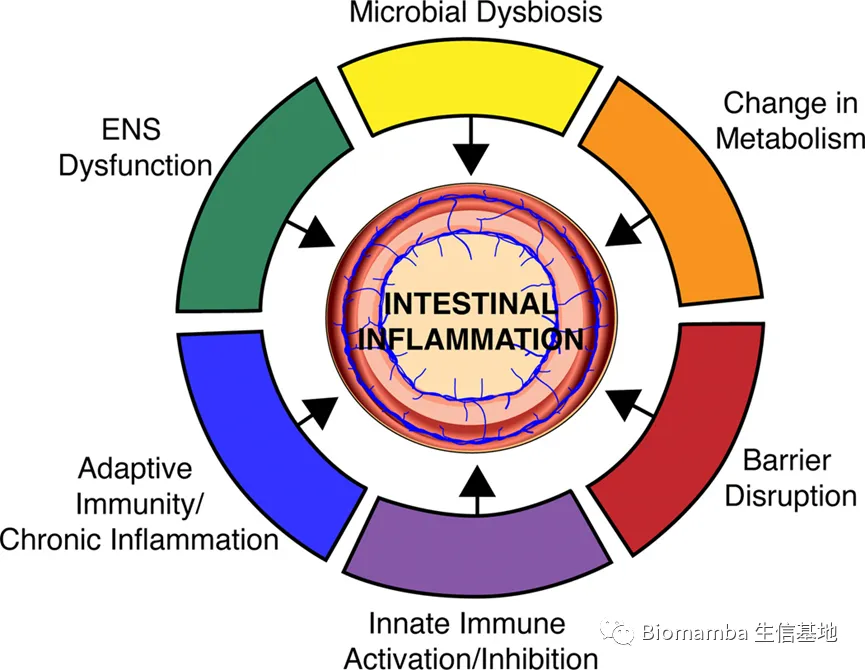

30分文章深度解析IBD中微生物-宿主互作
原文：https://mp.weixin.qq.com/s?__biz=MzAwMzIzOTk5OQ==&mid=2247500098&idx=2&sn=5f2d8882d9f25190083dcf79c767112c&chksm=9b3cb812ac4b31041f2652603548de42a8f60c337414620b1a57bd3e50fae64678e507f03970#rd 合集：文献速递
Biomamba荐语
我这人总是不按套路出牌，现在肠道微生物组的研究大都是**肠轴* ，蹊径上的人多了竟变成了主路，反而失去了新鲜感 ，并且忽略了与肠道微生物直接关联 的肠道系统，所以今天我们返璞归真 ，分享一篇于2015年发表在 《Cell Host Microbe》 的文献，影响因子为31.3，题目为An integrative view of microbiome-host interactions in inflammatory bowel diseases 。作者是来自麻省理工学院和哈佛大学博德研究所的 Marta Wlodarska、Aleksandar D. Kostic、和 Ramnik J. Xavier 教授。本文探索了肠道环境功能的差异及其与 IBD 发病机制的关系；介绍了导致 IBD 肠道脆弱性的主要原因；讨论了微生物加剧或预防疾病发作的证据及病毒和微真核成分影响的最新探索。为肠道微生物组在炎症性疾病中作用的最新功能和机制研究提供思路。
doi:
10.1016/j.chom.2015.04.008
链接：
https://www.ncbi.nlm.nih.gov/pmc/articles/PMC4498258/
概括
肠道微生物群由细菌、病毒和微型真核生物组成，是一种辅助器官系统，在肠道中具有不同的功能，对健康至关重要。本综述重点关注微生物群如何通过改变微生物群落结构、破坏粘膜屏障、调节先天性和适应性免疫以及肠道神经系统功能障碍来驱动肠道疾病。
介绍
在过去的十年中，炎症性肠病 (IBD) 和相关炎症性疾病的宏基因组学和代谢组学研究急剧增加。最广为人知的 IBD 包括克罗恩病 (CD) 和溃疡性结肠炎 (UC)，它们是由宿主遗传、环境和微生物等多种因素引起的慢性炎症性疾病。因此，我们开始对微生物组在肠道疾病中的作用形成生态范围的理解。最近，这些发现已开始转化为对炎症性疾病中微生物组的功能机制解释。在这篇综述中，总结了关于肠道微生物组在炎症性疾病中作用的最新研究，重点是功能和机制研究。我们首先探索沿着肠道长度存在的功能差异以及这些差异与 IBD 发病机制的关系。然后，我们介绍了导致 IBD 的主要肠道脆弱性，并讨论了微生物如何加剧或预防疾病发作的证据。尽管大多数研究都集中在微生物组的细菌成分上，但我们也讨论了最近探索病毒和微真核成分的影响。IBD 可以被认为是共生微生物可能影响肠道疾病的典型例子，这里 IBD 被用作解释微生物组在其他炎症性肠病，包括环境性肠病、乳糜泻和结肠炎相关结肠癌。
整个肠道环境的功能差异
要了解微生物群如何影响慢性炎症性疾病，尤其是 IBD，必须考虑肠道沿线的生理、免疫和病理差异。在与定义 IBD 中发生的微生物变化有关的研究中，这些方面经常被忽视，但它们对于了解与疾病发生有关的宿主途径至关重要。此外，许多检查 IBD 微生物变化的研究都集中在粪便样本上，这些样本不能完全反映肠道近端或粘膜相关群落发生的变化。肠道区域的功能差异是相关的，因为 CD 可以影响小肠和大肠的不同区域，导致炎症的节段性模式。相比之下，UC往往会影响结肠，表现出持续的炎症。在这里，我们将描述肠道的主要功能差异，包括上皮组成、总微生物负荷以及抗菌肽 (AMP) 和粘液的分泌（图 1），重点关注这些功能差异如何与IBD 的发病机制相关。

图1小肠和大肠景观的差异化特征
【小肠始于胃之后，由十二指肠、空肠和回肠组成。回肠通过盲肠与大肠相连。大肠由升结肠、横结肠、降结肠和直肠组成。小肠具有较高的氧气水平和抗菌肽 (AMP) 产量，并增加了肠道运动，而在大肠中，微生物负荷最高，短链脂肪酸(SCFA) 丰富。肠道的整个长度由单层上皮细胞排列。在这些细胞下面是固有层 (LP)，它由结缔组织组成，提供血液供应、淋巴系统和黏膜下丛的神经支配，这对肠道的功能至关重要。重要的是，LP 容纳了先天和适应性免疫系统的许多免疫细胞（未显示）。进一步的肠神经支配发生在平滑肌的薄层，即粘膜肌层，它将 LP 与下面的粘膜下层分开。黏膜下层下方是厚厚的肌肉层，即肌层，由内环层和外纵层组成。在两个肌肉层之间是肌间神经丛，它是肠神经系统 (ENS) 的重要组成部分，其功能是协调肠道蠕动。肠的最外层是浆膜。在黏膜水平，小肠有长的“手指状”绒毛，伸入管腔，而大肠中不存在。在小肠中，隐窝包含干细胞、产生 AMP 的潘氏细胞和未分化细胞；绒毛含有分化的肠细胞、肠内分泌细胞和杯状细胞。在小肠中，杯状细胞将粘液分泌到管腔中，其具有松散、非粘附的稠度。在大肠中，隐窝缺乏潘氏细胞，只含有干细胞和未分化细胞；分化的细胞包括肠上皮细胞、肠内分泌细胞和杯状细胞。在这里，肠细胞参与 AMP 的产生，杯状细胞分泌形成双层结构的粘液：内粘液层和外粘液层。尽管许多细胞类型在小肠和大肠之间共享，但这些细胞的功能因肠道位置而异。】
-
上皮层
-
尽管小肠和大肠在功能上有很大差异，但它们在结构上有一些相似之处（图 1）。
-
小肠分为三个功能不同的段：十二指肠、空肠和回肠——上皮的功能受每个段特异性转录因子的表达调节。例如，GATA4 由十二指肠和空肠中的上皮细胞表达，GATA4 表达的减少导致这些细胞吸收胆汁酸，这种功能通常仅限于回肠上皮细胞。肠道的大部分消化和吸收功能发生在十二指肠和空肠，由长绒毛和微绒毛促进，微绒毛含有介导消化和运输营养的酶。一种这样的刷状缘酶是肠碱性磷酸酶 (IAP)，它在十二指肠中高度表达。IAP 的功能是水解单磷酸酯，导致如LPS 等微生物配体解毒，并且对于维持肠道稳态至关重要。CD 和UC 患者肠道发炎的黏膜组织表现出IAP 产生减少；这可能通过增强的Toll 样受体 (TLR) 4 信号传导和增加细菌易位进入粘膜而发生。影响小肠的炎症性疾病通常会导致绒毛变钝，导致吸收不良和营养不良，如乳糜泻和环境性肠病所示。
-
大肠的主要功能是重新吸收水分和吸收维生素（例如维生素 K、维生素 B12、硫胺素、核黄素）。大肠也是微生物群对难消化纤维进行酶促降解的场所，从而产生短链脂肪酸 (SCFA)。SCFAs，包括乙酸盐、丙酸盐和丁酸盐，对上皮细胞发挥保护作用并刺激液体吸收。众所周知，UC 会导致微生物组成发生变化并减少 SCFAs 的产生，并且用 SCFAs 治疗可能在临床上是有益的。从机理上讲，丁酸盐对 UC 有益，因为它是上皮的主要能量来源，诱导调节性 T 细胞 (Tregs) 的分化，并且通过 G 蛋白偶联受体 43 发出信号，对炎症的消退至关重要。
-
肠道微生物分层
-
微生物群在整个肠道内定殖，从十二指肠到远端结肠的微生物总数增加，其中微生物负荷估计为每克粪便 1012 个微生物。普遍认为，十二指肠和空肠每克肠腔内含有少于105 个细菌，而回肠中这一数字增加到每克肠腔内含有 107 个细菌，而结肠中的细菌进一步增加。Vaishnava 等人的一项研究表明，以每平方厘米组织或粪便的 16S rRNA 基因拷贝数来衡量小鼠回肠中有 107 种粘膜相关细菌，而粪便细菌为 109种。此外，这项研究表明，由上皮细胞中 MyD88 信号传导的丢失介导的肠道屏障破坏导致粘膜相关细菌的完全对数增加，而粪便细菌计数没有变化。了解IBD 期间总细菌负荷如何变化可能是疾病发病机制的一个有趣方面，因为增加的黏膜相关细菌可能导致肠道炎症，并可能解释患者对治疗的混合反应。
-
微生物定植的密度主要受肠道长度方向的 pH、氧气和 AMP 梯度以及通过肠道的速度控制（图 1）。报告显示 pH 值略有不同，但趋势相似：十二指肠的 pH 值最低（pH 6.4-6.6），向回肠末端逐渐升高（pH 7.3-7.5），盲肠降低（pH 5.7-6.4），然后再次向远端结肠逐渐增加 (pH 6.6–7.1)。沿结肠长度存在氧气梯度，十二指肠中的水平最高，逐渐降低至远端结肠厌氧环境。小肠上部的微酸性 pH 值和含氧环境限制了微生物对耐酸和耐氧细菌的定植，主要是乳杆菌属（ Lactobacillus） 、链球菌属 （,Streptococcus） 和韦荣氏菌属 （Veillonella） 。结肠中也存在径向氧气梯度，氧气由上皮细胞产生，并被最接近粘膜的微生物消耗。与IBD 相关的慢性炎症可能通过增加血流量和免疫反应（例如释放活性氧）导致肠道中的氧气水平升高，这会通过选择更耐氧的生物体和破坏专性厌氧群落来影响微生物组成。最近的一项研究表明，在诊断时未接受过治疗的IBD 患者具有改变的粘膜相关细菌群落，有利于耐氧物种的存在。这种耐氧物种的关联可用作早期诊断工具，并提出了一种旨在使肠道氧气水平正常化的新治疗方法。与氧气梯度相似，肠道运动也沿肠道长度降低，十二指肠和空肠记录的速度最高。肠道运动的变化对 IBD 的严重程度有重要影响，最近的一项研究表明，CD的肠道发作与小肠运动的降低和C 反应蛋白和钙卫蛋白等炎症标志物的增加有关。
-
抗菌肽和粘液层
-
小肠有许多位于隐窝中的潘氏细胞（图 1），潘氏细胞可以分泌抗菌肽（AMP），包括 a-防御素、C 型凝集素、溶菌酶和磷脂酶A2。AMP 的分泌依赖于自噬，因为自噬的遗传破坏会阻碍AMP 的分泌。在大肠中，潘氏细胞不存在，由肠细胞介导包括 β-防御素、C 型凝集素、导管素、半乳凝素和脂质运载蛋白等AMP 分泌。有趣的是，大肠的微生物组编码了对特定类别的 AMP 提供抗性的基因。这种抗性在炎症期间赋予微生物群落弹性，当AMP 水平高时，允许肠道感染后微生物群更快恢复。
-
肠粘液由杯状细胞产生，主要由一种高度 O-糖基化的蛋白-——粘蛋白 2 (MUC2) 组成，分泌到小肠和大肠的管腔中（图 1）。粘液相关糖被肠道微生物利用，最近的研究表明，3 型先天淋巴细胞对微生物配体的感知会刺激粘液中添加岩藻糖，这反过来又支持共生细菌的定植。某些共生细菌（如 Bacteroides thetaiotaomicron ）释放黏膜聚糖的岩藻糖苷酶和唾液酸酶活性不会损害黏液层的完整性，并且确实是健康微生物群的共同特征。然而，病原菌可以利用这些释放的糖来促进它们的扩张。此外，建立对肠道微生物群的免疫耐受性已被证明树突状细胞暴露于微生物-MUC2复合物；根据 MUC2 的存在，对特定微生物抗原的识别导致产生耐受信号。在小肠中，由微生物触发的肠细胞分泌 meprin β导致 MUC2 从上皮表面裂解，从而阻止粘附粘液层的形成。相反，大肠中meprin β的缺乏允许形成粘液双层；内层牢固地附着在上皮表面，被认为是无菌的，而外层是含有微生物的松散基质。这种双层结构的生理需求可能是由于大肠的高细菌负荷、AMP 产量减少以及粪便物质的运输时间较慢。IBD 患者的内粘液层较薄，MUC2 的糖基化降低，这两种变化都会降低内粘液层的屏障潜力。与 AMP 分泌一样，大肠中的粘液分泌也高度依赖于自噬，通过活性氧和 NLRP6 炎性体连接介导的信号传导。
-
肠道中两种类型的分泌细胞（潘氏细胞和杯状细胞）中的自噬与 IBD 高度相关：自噬基因 ATG16L1 中的 CD 相关风险等位基因影响两种细胞类型的功能。遗传风险等位基因也可能通过影响微生物群的组成而导致疾病；例如，同卵双胞胎的肠道微生物群比异卵双胞胎更相似，并且IBD 相关多态性与特定细菌类群丰度的变化有关。宿主微生物群的功能特性对宿主遗传学和微生物群定植功效之间双向关系的影响程度将是微生物疗法开发的一个重点领域。例如，粪便微生物群移植 (FMT) 已被证明可有效治疗艰难梭菌感染性结肠炎。然而，目前尚不清楚 IBD 患者的遗传背景改变会在多大程度上影响治疗成功。
肠道微生物对IBD易感性的影响
迄今为止，宏基因组研究已经从菌落层面了解 IBD 中微生物组的反复变化。我们试图通过在下面介绍 IBD 的主要漏洞来梳理这些微生物驱动的病理（图 2）。随着微生物组研究领域向 IBD 临床转化的成熟，这些脆弱性应作为治疗干预的主要目标。

图2 导致IBD的肠道脆弱性
【降低的α多样性和肠道微生物群落结构的变化是IBD的关键表型，可能有助于疾病的发生。肠道微生物群的组成严重影响肠道的代谢环境，特定代谢物与炎症有关。有些微生物会影响免疫系统的先天和适应性的活动，这些相互作用可以引发疾病并维持慢性炎症。肠道微生物已被证明可以产生多种神经递质，对ENS的发育和功能也至关重要；这些微生物诱导的对ENS的修饰可以转化为对粘膜免疫系统的下游影响。】
-
微生物失调
-
通过对一大群未接受治疗的克罗恩病（CD）儿科患者使用基于宏基因组和宿主转录组联合分析，有可能将微生物组的特定改变与临床疾病中的宿主反应联系起来。Gevers 等人通过对回肠末端和直肠活检信息确定了一组在疾病中含量不同的细菌，并证明这组微生物对 CD 的临床结果具有预测价值。RNA-Seq 分析了这些患者活检样品，揭示了抗菌双氧化酶 (DUOX2) 表达与变形菌的扩增之间呈正相关（发现在CD中丰度增加），而脂蛋白 APOA1 的表达与厚壁菌门呈正相关（CD中减少）。增加的 DUOX2 和减少的 APOA1 表达的特征有利于氧化应激和 Th1 表型，并且在严重黏膜损伤的患者中富集。尽管这些特定的关联需要在扩大的患者群体中得到证实，但这项研究为未来研究整合宿主表达和宏基因组数据集以推断宿主免疫反应和微生物组之间的相互作用提供了一个重要的框架。
-
数十年来，健康供体的粪菌移植（FMT）已被用于治疗艰难梭菌感染（这是一种形成内生孢子、产生毒素的细菌）。然而，第一个证明其功效的对照试验最近才发表，结果表明，在 16 名患者中的 15 名输注供体粪便后，艰难梭菌相关性腹泻得到解决。凭借这一惊人的成功，FMT 已成为治疗艰难梭菌感染的新标准。为了防止供体粪便感染的潜在危险，Allen-Vercoe及其同事以及其他研究小组一直在设计用于粪便移植的合成细菌混合物，这些混合物已成功治疗艰难梭菌感染。最近，Buffie等人使用小鼠模型、临床研究、宏基因组分析和数学模型来识别单一物种，即胆汁酸7-α-脱羟基肠道细菌梭状芽孢杆菌，它赋予抗艰难梭菌感染的抗性，可用于治疗高危人群。IBD 客观上比艰难梭菌感染更复杂，因为它是细菌的失调群落与异常的黏膜免疫反应相结合，驱使患者患上疾病。一项荟萃分析发现，113 名 IBD 患者中有 80 名（71%）在接受 FMT 治疗后症状减轻或消失；然而，目前尚不清楚 FMT 是否会出现治疗性反应。利用 FMT 治疗 IBD 的一个挑战是难以预测哪些供体菌株以及以多少丰度在宿主中维持。因此，进一步研究受体保留物种的重要因素并为此目的开发保留预测软件至关重要。此外，IBD的FMT 方法应考虑治疗前微生物组的组成和免疫表型，允许选择特定的微生物混合物和免疫调节药物来针对患者的特定疾病状态。
-
代谢效应
-
微生物组影响炎症性疾病的一种机制是引起宿主新陈代谢的变化。宿主代谢与肠道微生物组的代谢密切相关；例如，人类依赖共生细菌来合成几种关键维生素，包括生物素、叶酸、维生素 B5、维生素 B6、核黄素和硫胺素。我们还依赖我们的微生物组从我们的饮食中更完整地提取超出我们自己可以消化的营养。虽然微生物组是维持健康的新陈代谢的重要贡献者，但它也可以将我们的新陈代谢推向炎症性疾病。氢气 (H2) 和硫化氢 (H2S) 的产生在胃肠道区域之间差异很大，并且参与免疫调节。在一项检查10 个人体栖息地的微生物组的研究中，发现 H2 是一种抗炎代谢物的生产和利用酶所必需的，口腔中大量存在，但肠道中几乎没有。H2S 是微生物利用 H2 产生的代谢物，高浓度时可抑制SCFA的产生，低浓度时可参与调节宿主炎症反应。粪便中产生H2S的潜力特别高，并且与致病菌属密螺旋体和梭杆菌属的丰度密切相关，这表明在宿主细胞毒性中起作用。David 等人对接受完全由植物或动物产品组成的短期饮食的健康人类志愿者进行了比较发现，与纯素食者相比，食肉动物的微生物群含有更多耐胆汁酸的分类群，包括 Alistipes、Bacteroides 和 Bilophila 。使用胆汁酸作为能源的高水平 Bilophila wadsworthia 会导致胆汁酸的牛磺酸结合增加和随后的 H2S 产生。高 H2S 水平反过来促进IL-10-/- 小鼠中促炎Th1细胞水平的增加和结肠炎的发展。在CD 儿科患者中，由氨基酸、元素氮、碳水化合物、维生素、矿物质和低脂肪组成的元素饮食已被证明与皮质类固醇治疗一样有效。基本饮食会导致肠道微生物组组成发生巨大变化并增加微生物多样性。由于饮食改变了微生物产生潜在有害代谢物的底物的可用性，这一发现表明饮食在管理 IBD 中的重要性。
-
炎症性疾病的另一个重要考虑因素是微生物群对 药物代谢的影响。例如，强心甙地高辛会导致肠道细菌 Eggerthella lenta 上调编码糖苷还原酶的独特操纵子，该酶使用地高辛作为电子受体，从而使药物失活。微生物组对用于治疗炎症和其他疾病的药物代谢的影响可以帮助解释为什么某些药物对某些人比其他人更有效，应该更仔细地研究。
-
代屏障破坏
-
微生物群与宿主的分离始于物理屏障：粘液层和上皮细胞。小肠中微生物群的划分取决于分泌的抗菌蛋白，包括RegIIIγ、α-防御素和IgA。RegIIIγ 是一种针对革兰氏阳性菌的抗菌凝集素，受TLR 控制。α-防御素是一种小的抗菌肽，可塑造肠腔内群落的组成。在缺乏加工鼠源α-防御素所必需的酶的小鼠中，发现尽管总细菌数量没有变化，但固有层中的分段丝状细菌和 Th17 细胞大量减少。IgA由浆细胞响应腔内环境中的抗原而产生，分泌形式的 IgA 被跨上皮细胞转运以允许与腔内细菌结合。一项新的研究观察到野生型小鼠粪便 IgA水平的显着变化，这些变化可垂直传播并与化学诱导的结肠炎的易感性相关，较低的 IgA 水平会增加对结肠炎的易感性。降低的 IgA 水平被证明是由于微生物组的改变，其特征是存在特定的 Sutterella 属；这种改变的微生物组导致 IgA 分泌物的降解。然而，仍有待确定哪些细菌蛋白酶负责IgA分泌成分的降解，以及这些细菌蛋白酶在 IBD 患者中的相对丰度。
-
小肠中抗菌肽的表达部分受mTOR 控制，而 mTOR 反过来又被氨基酸色氨酸通过上皮细胞腔表面上的 ACE2 转运途径激活。在小鼠中，缺乏 Ace2 或不含色氨酸的饮食会导致肠道微生物组发生巨大变化，并增加化学诱导的结肠炎的严重程度。将这种改变的微生物组移植到野生型小鼠也导致葡聚糖硫酸钠诱导的结肠炎加重。
-
先天免疫
-
哺乳动物的免疫系统与其本土微生物群共同进化。它必须保持严格的平衡，一方面表现出对共生细菌的耐受性，另一方面对病原菌的反应性。这种平衡的破坏是大多数炎症性疾病的核心。NOD2 负责刺激免疫系统以响应细菌肽聚糖，是第一个确定的IBD易感基因，并且是炎症性疾病机制的一个例子。
-
微生物群向宿主提供维持体内平衡和肠道耐受性所必需的重要线索。对不育斑马鱼的研究表明，微生物群的存在对于将中性粒细胞募集到损伤部位至关重要，并发现这种效应是由微生物驱动的血清淀粉样蛋白A产生介导的。另外，骨髓细胞产生的微生物群驱动的IL-1β驱动了结肠调节性 Tregs 的维持，该过程需要3型先天性淋巴细胞产生粒细胞-巨噬细胞集落刺激因子，从而导致 Treg 稳态和包括视黄酸和 IL-10等调节因子的产生。共生微生物群的存在对于基础水平的 IL-1β 产生和随之而来的免疫系统几个关键方面的稳态是必要的。
-
肠上皮表达CD1d，其将自身和微生物脂质抗原呈递给自然杀伤 T (NKT) 细胞。CD1d 在发炎的 IBD 组织中下调，NKT 细胞参与促进结肠炎和IBD。CD1d通过激活STAT3和调节细胞因子IL-10、热休克蛋白110 和CD1d本身的 STAT3 依赖性转录来引发其保护作用，是免疫系统维持对其微生物群的耐受性的重要机制。最近发现的另一个微生物群缓解NKT 细胞介导的炎症的机制是微生物产生鞘脂，这种鞘脂在真核生物中普遍存在，但仅存在于少数细菌属中。维兰德布朗等人纯化并解析了由拟杆菌属菌株产生的三种鞘脂（也称为糖基神经酰胺）的结构。其中之一，α-半乳糖神经酰胺，能够控制NKT 细胞活性。同样，Kasper 及其同事已经鉴定出一种由脆弱拟杆菌产生的鞘糖脂，它抑制恒定自然杀伤细胞 (iNKT) 细胞活性，导致其在固有层中的数量减少，并降低了结肠炎小鼠模型中疾病的严重程度。
-
先适应性免疫
-
微生物组在适应性免疫细胞稳态中的功能首次被发现，发现脆弱拟杆菌产生的多糖A可恢复无菌小鼠的Th1/Th2 平衡，并通过诱导Tregs来预防结肠炎。此外，在小肠中用分段丝状细菌 (SFB) 定植小鼠会导致 SFB 粘附到回肠和派尔斑上的吸收细胞，促进Th17细胞的产生，这是T细胞的唯一亚群在肠道中能够检测 SFB 抗原。自这些初步研究以来，Honda 及其同事已经表明，一组46种鼠源性和17种人源性梭菌属物种可以在小鼠体内诱导结肠 Treg，从而防止结肠炎和过敏。然而，当这些物种中的任何一种用于单定殖无菌小鼠时，对Tregs没有影响，这表明需要群落水平相互作用的某些方面来诱导 Tregs，而不是任何单一的梭菌物种。SCFAs在维持宿主适应性免疫功能方面也发挥着重要作用。SFCA有助于防止炎症并通过抑制组蛋白去乙酰化酶活性诱导Treg功能，导致Foxp3基因的乙酰化增加和 Foxp3表达增加。未来的研究应侧重于验证人类肠道粘膜中的这些途径，因为这些特定微生物对小鼠适应性免疫系统的影响不一定会转化为人类疾病。
-
肠神经系统
-
肠神经系统 (ENS) 由200-600亿个神经元组成，这些神经元被组织成两个神经丛：肌间神经丛，延伸整个胃肠道；黏膜下神经丛，仅在小肠和大肠中发现（图1）。ENS 的主要功能包括调节肠道蠕动、跨粘膜流体通量、局部血流、肠道激素释放、营养吸收以及与免疫系统的相互作用。肠道微生物群对 ENS 的影响是一个新兴的研究领域，需要对肠神经元、肠神经胶质细胞 (EGC) 和肠内分泌细胞进行深入表征，以了解微生物如何与这些细胞以及下游细胞进行交流，对肠道免疫和生理的影响，以及这如何影响IBD。
-
几种具有神经活性功能的分子，包括 γ-氨基丁酸 (GABA)、色胺、吲哚-3-丙酸、5-羟色胺和 SCFA，由肠道细菌产生并作用于ENS以调节肠道稳态（表 1）。GABA是一种众所周知的肠神经递质，在肠肌间丛和内分泌细胞中含量较高，是肠道运动的重要调节剂。有趣的是，CNS 中的GABA 信号传导与焦虑和抑郁有关，而焦虑和抑郁通常与 IBD 相关。在小鼠中，摄入鼠李糖乳杆菌菌株会导致大脑中 GABA 表达发生改变；然而，尚不清楚 ENS 中的 GABA 信号如何促成这一观察。GABA 是由宿主使用谷氨酸作为底物在涉及 L-谷氨酸脱羧酶的反应中产生的，最近表明，某些乳酸杆菌和双歧杆菌菌株也使用相同的生物合成途径在肠道中产生 GABA。肠道微生物组GABA 的产生也受到饮食的影响：在食肉动物中，分解谷氨酸的分解代谢反应增加（可能导致管腔内 GABA 增加），而食草动物则显示谷氨酸生物合成途径增加。氨基酸色氨酸也可以被肠道微生物群利用，代谢副产物包括色胺、血清素和吲哚-3-丙酸的产生。色胺和血清素都是神经递质，对肠道运动有明显的影响；而对吲哚-3-丙酸的功能知之甚少，但已在脑脊液中发现并具有神经保护功能。此外，肠道内分泌细胞产生的血清素已被证明会在小鼠化学诱导的结肠炎期间引起炎症，抑制粘膜血清素的产生会减轻炎症。微生物产生的5-羟色胺如何导致IBD期间的肠道炎症尚未得到很好的描述。微生物产生的 SCFA 也被证明可以增强肠道神经元成熟和肠道运动。
表格1 由肠道中的共生菌产生的神经活性分子
| NeuroactiveMolecules | Bacterium | Catalytic enzyme/process | Effect | Ref |
|---|---|---|---|---|
| GABA | _Lactobacillus,_Bifidobacterium | Glutamate decarboxylase/Decarboxylation of glutamateto GABA | Prevents anxiety and depressionRegulates intestinal motility | (Barrett et al., 2012; Bravo etal., 2011;Krantis, 2000) |
| Tryptamine | _Clostridium sprogenes,_Ruminococcus gnavus | Trp decarboxylase/Decarboxylation of tryptophanto tryptamine | Tryptamine induces ionsecretion by IECsTryptamine induces the releaseof serotonin | (Williams et al., 2014) |
| Indole-3-PropionicAcid | Clostridium sporogenes | Unknown/ Deamination ofTryptophan | Powerful antioxidantProduction requires microbiota | (Chyan et al., 1999; Wikoff etal., 2009) |
| Serotonin | Unkown | Unknown/ Metabolite ofTryptophan | Stabilizes mood/ anti-depressantModulates intestinal motility | (Fayyaz and Lackner, 2008;Wikoff et al., 2009) |
| SCFA | _Bacteroides,__Bifidobacterium,__Propionibacterium,__Eubacterium,__Lactobacillus,_Clostridium | Multiple/ Fiber fermentation | Energy sourceReduce proinflammatorycytokine production | (Macfarlane and Macfarlane,2012;Suply et al., 2012) |
- 肠神经胶质细胞 (EGCs)是 ENS 的主要细胞成分，存在于粘膜中，对 ENS 功能和肠道稳态至关重要。EGC与肠道神经元结构紧密结合，黏膜中 EGC 数量的维持取决于微生物群的存在。由于肠道屏障缺陷，EGCs 的消融会导致严重的肠道炎症，并且已被提议作为 CD 起始的一种机制，因为已在患者中报告了EGCs的早期病理变化。EGC表达TLR 2、3和 4，EGC 检测细菌微生物相关分子模式对肠上皮的屏障功能有直接影响。最近已证明 TLR2 缺陷型小鼠对化学诱导的结肠炎的易感性增加是由于 ENS 和 EGC 功能结构的改变造成的。响应LPS的肠道TLR信号传导通过指导肠道神经元产生CSF-1在蠕动中也很关键。这种信号传导导致巨噬细胞募集到肠肌层并产生骨形态发生蛋白-2，它作用于指导蠕动的肠神经元。在抗生素使用期间，这种 TLR 信号丢失，对蠕动产生严重影响。添加 LPS 能够逆转这一缺陷，但尚不清楚哪些细胞类型将 LPS 信号传播到肠神经元。
IBD和被忽视的微生物：微型真核生物和病毒
肠道微生物群包含一个迄今为止大多被忽视的微型真核生物和病毒群落。
-
微型真核生物
-
与人类粪便微生物群的细菌成分相似，微真核生物群落依赖于地域。与马拉维人相比，美国居民的粪便微生物群减少了成人和儿童群体中真菌和其他微型真核生物的丰度。这种肠道微真核生物丰度的变化可能与卫生假说有关，该假说描述了日常卫生条件和过敏性疾病之间的关系，并且可能是发达国家 IBD 患病率增加的一个因素。
-
通常，微生物的丰度以总测序读数的百分比来确定，微真核生物的含量为0.01-0.1%，表明丰度较低。然而，这种方法可能不足以代表整个微型真核生物群落，因为它没有考虑总生物量方面的微生物组组成（真菌等微型真核生物比典型的细菌细胞重 100 倍）。此外，确定的测序读数需要注释的参考序列，这些参考序列没有很好地开发用于微真核生物。此外，没有研究检查人类肠道微生物群的粘膜相关部分中微真核生物的存在，因为所有研究都依赖粪便衍生的DNA进行测序。从代谢的角度来看，与细菌相比，微真核生物产生更大的小分子，输出的潜力更大。
-
探索微真核种群的基因组研究出现的一个共同趋势是肠道原生生物（ Blastocystis） 在世界各地的健康人群中普遍流行。九种已知的在人类中定殖的 Blastocystis 亚型之间的巨大异质性以及它们的低水平丰度导致关于定殖流行率的报告存在很大差异：发达国家的个体为 5-56%，发展中国家高达76%。在直接评估微真核生物在 IBD 中可能作用的有限研究中，Petersen 等人表明在丹麦队列中，微真核生物的定植，包括 Blastocystis 和 Dientamoeba ，与UC 呈负相关，表明这些原生生物具有保护性。尽管缺乏特定的微真核生物不太可能导致 IBD的发作，但它们可能具有重要的代谢功能，可降低对慢性肠道炎症的易感性。
-
人类粪便微生物组包括丰富的真菌群落。对鼠微生物组也进行了这一观察，从而可以从机理上了解真菌在肠道健康中的作用。Dectin-1 是一种在中性粒细胞、巨噬细胞和树突状细胞表面表达的C型凝集素，可识别真菌细胞壁中发现的β-1,3-葡聚糖；Dectin-1的连接启动 Th17 介导的免疫反应。Iliev 及其同事发现，真菌与粘膜密切相关，通过 dectin-1 的真菌依赖性信号传导对于维持对微生物群的耐受性和保护免受肠道炎症很重要。根据这一假设，最近的一项研究表明，粘液与共生细菌的结合引发了小肠树突状细胞的耐受信号，该信号需要通过 dectin-1 发出信号。此外，人类dectin-1的突变与医学上难治性UC相关。除了 Iliev 等人的研究外，关于真菌如何促进IBD中的宿主代谢或炎症通路的研究知之甚少。宿主中的鞘脂信号控制炎症性疾病的许多方面，现在人们认识到并非所有鞘脂都是宿主衍生的。虽然只有一小部分肠道细菌会产生鞘脂，但所有真菌的膜中都含有鞘脂，其中酵母是特征最好的例子。一项研究表明，酵母衍生的鞘脂可以激活肝脏中的宿主过氧化物酶体增殖物激活受体；然而，目前尚缺乏对这些鞘脂如何整合到宿主炎症通路中的了解。这些研究将需要对微真核生物分离物进行无菌转移研究，并更好地确定微真核物种的相对脂质组学特征以及它们如何与肠道粘膜免疫系统相互作用。
-
病毒
-
微生物组的第二个被忽视的方面是共生病毒组。尽管历史上病毒只在单一疾病与单一病原体关系的背景下被考虑，但测序技术的进步已经揭示了健康和疾病中存在的病毒组的巨大规模：据估计，人类微生物组中的病毒数量可能是细菌数量的 10 倍，这意味着病毒组的数量可能比人类细胞多 100 倍。人类病毒组由真核病毒和噬菌体组成，它们直接影响细菌微生物组的组成。例如，Rohwer 及其同事发现，噬菌体衣壳表达了与粘蛋白糖蛋白结合的免疫球蛋白样蛋白结构域，并且可能是非宿主衍生的先天免疫的来源。近年来，出现了大量数据，这些数据描述了病毒组在炎症性疾病和维持健康中的多种作用。在最近的一项研究中，Virgin 及其同事发现，IBD 中细菌群落组成的一些变化可以用噬菌体群落的变化来解释。使用UC和CD 患者与家庭健康对照者的纵向研究描述了 CD 和 UC 中Caudovirales 噬菌体的显着扩增，以及伴随细菌微生物组多样性降低的病毒组多样性普遍增加。虽然扩大的尾病毒目可能直接导致细菌多样性降低，但尚不清楚噬菌体丰度的增加是从环境中获得还是由共生微生物群诱导噬菌体引起的。Kernbauer等人报告说，用一种病毒（即鼠诺如病毒）定殖无菌小鼠可以取代共生细菌的许多有益功能。此外，该病毒还改善了在无菌小鼠中观察到的其他几个缺陷：包括 CD3+ T 细胞数量增加、潘氏细胞功能增加和抗体水平升高。细菌和单一病毒重新塑造无菌肠道的能力表明，这种效应主要是通过非特异性微生物信号发生的。此外，作为对葡聚糖硫酸钠暴露的反应，鼠诺如病毒提高了总体存活率并防止结肠长度缩短。
-
尽管遗传学和微生物组之间的相互作用已在很大程度上从细菌成分方面进行了探索，但最近的研究也指出了病毒的重要性。在自噬基因 Atg16l1 表达降低的小鼠中，潘式细胞表现出许多结构异常和颗粒分泌功能障碍。然而，这些小鼠在无菌条件下表现正常，并且引入肠道诺如病毒足以恢复潘氏细胞功能障碍。同样，诺如病毒感染 IL-10 缺陷小鼠会导致上皮屏障破坏，这说明诺如病毒提供了一种致结肠刺激，可以根据肠道微生物群其余部分的组成将宿主推向结肠炎。这些例子证明了病毒在遗传易感宿主中介导疾病表型的重要性。
IBD作为了解其他肠病的平台
除了 IBD，还有许多其他流行的肠道炎症性疾病在微生物组的影响方面尚未得到很好的探索。从挖掘肠道微生物组和定义导致 IBD 的微生物驱动病理学中获得的知识现在可以应用于这些未被充分研究的疾病，以揭示其病因并开发新的治疗方法。除了通常影响生活在高收入国家的个人的 CD 和 UC 之外，存在明显的IBD 样综合征，这些综合征在卫生条件差、个人卫生和营养不良普遍存在的低收入国家更为普遍。这些包括环境性肠病(EE)、热带口炎 (TS) 和免疫增殖性小肠病(IPSID)。
-
EE,TS,IPSID
-
EE 和 TS 现在被认为是全球儿童营养不良后遗症和持续存在的重要因素，这是儿童死亡的主要原因。IPSID 影响患有小肠慢性炎症的年轻人，导致淋巴瘤。然而，尽管这些疾病的影响广泛，但其确切原因仍然未知。低收入国家的卫生条件差可能导致更多地接触粪便细菌并增加肠道感染的发生率。持续接触粪便细菌可能导致小肠细菌过度生长，这种微生物的过度生长可能导致 EE 的病理变化特征，特别是绒毛变钝、肠道通透性增加和慢性炎症，从而损害近端小肠并随后减少营养吸收。表现出 EE 特征的严重营养不良儿童的粪便微生物群粪菌移植给无菌小鼠可以在小肠中重现EE 疾病，包括绒毛变钝。从这些儿童的粪便微生物群中分离出11 株 IgA 包被的细菌，包括肠杆菌科，并显示它们在无菌小鼠中具有 EE 样表型，这表明这些菌株可能与疾病病理学有关。或者，肠道感染可以彻底改造肠道，使其更容易患上慢性病，而这些慢性病会因卫生条件差而加剧。这些微生物变化对 EE、TS 和 IPSID 的病理生理学的贡献仍然大部分未知，并且与 IBD 类似，没有一种病原体、微生物、基因或环境因素已被证明可以驱动疾病。
-
EE 和 TS在一些重要的定义特征上存在共识。EE 和 TS 的相似之处在于这两种疾病都会导致生长发育迟缓并具有相似的特征，包括慢性炎症、吸收不良、绒毛萎缩、淋巴细胞浸润和小肠通透性增加。然而，它们不同之处在于 EE 在临床上不表现为腹泻，而 TS 表现为慢性腹泻并且具有传染性。饮食不足会影响免疫系统，增加 TS 感染的发生率和严重程度，从而导致新陈代谢改变和营养损失，加剧营养不良。如果肠道感染在 TS 中被清除，尚不清楚疾病是否会以感染后EE的形式在营养不良的儿童中持续存在，因此尚不清楚这两种疾病是否相互独立。
-
IPSID 是一种主要见于发展中国家的小肠淋巴瘤。这种类型的淋巴瘤源于黏膜相关淋巴组织的淋巴浸润，导致吸收不良和蛋白质丢失性肠病；在疾病的晚期，会形成恶性弥漫性大 B 细胞淋巴瘤。从微生物学的角度来看，这种独特的小肠癌特别有趣：疾病的早期阶段，在肿瘤发展之前，对抗生素有反应，强烈表明该疾病可能是由微生物感染或微生物菌群失调引发的。尽管 Lecuit 等人没有确定单一的细菌病原体是 IPSID 的原因。另外有报告说，71% 的检查患者的空肠黏膜有空肠弯曲杆菌，对抗生素治疗的有益反应与根除空肠弯曲杆菌有关。然而，尚未探索微生物组其他成员的变化。
-
肠道菌群、慢性炎症和结直肠癌
-
最近的几项研究表明肠道微生物群是结直肠癌 (CRC) 的重要参与者。在 IBD 中也观察到在 CRC 微生物组中观察到的一些改变，慢性肠道炎症是发生 CRC 的主要危险因素。比较人类肿瘤中的细菌群落与未受累的邻近结肠组织的研究已将梭杆菌属物种确定为肿瘤部位最丰富的分类单元。梭杆菌是一种侵入结肠细胞的细菌，也与 IBD 有关；由于 IBD 是发展为CRC 的最大风险因素之一，这种炎症相关细菌可能被证明是这些疾病之间的重要联系。最近的研究将梭杆菌与结直肠腺瘤（CRC 的前体）联系起来，提供了梭杆菌存在（如果不直接参与）在致瘤过程中的证据。将人类结肠分离出的具核梭杆菌引入遗传易感小鼠导致肠道肿瘤发生加速，进一步证明梭杆菌在驱动癌症中的直接作用。
-
其他肠道炎症疾病状态
-
乳糜泻、普雷沃氏菌引起的疾病和 1 型糖尿病 (T1D) 都与特定的微生物特征有关。乳糜泻是一种免疫介导的肠病，由饮食中的小麦麸质在遗传易感个体中引发。HLA-DQ基因是疾病的主要遗传决定因素，占遗传风险的40%。然而，乳糜泻遗传风险较高的婴儿也发现双歧杆菌丰度降低，葡萄球菌和脆弱拟杆菌数量增加，这可能导致疾病进展。普雷沃氏菌（ Prevotella） 是一种与炎症和自身免疫性疾病有关的新兴病原体，已被证明可侵入结肠隐窝，驱动 NLRP6 介导的生态失调，并加剧结肠炎。一项对 114 名新发未经治疗的类风湿性关节炎患者和对照者进行的基于粪便的研究发现， Prevotella 与疾病密切相关，而 P. copri 小鼠的定植导致更严重的化学诱导结肠炎。有趣的是，发生自发性骨髓炎的 _Pstpip2 cmo_小鼠的肠道微生物群以普氏菌属的生长为特征。最近对有 T1D 风险的婴儿进行的一项前瞻性纵向研究确定了一个微生物特征，包括群落多样性的急剧下降和包括 Rikenellaceae 在内的病原体的扩展。该特征与较高的粪便β-防御素-2 水平相关，并在临床诊断前一年区分继续发展为 T1D 与非 T1D 个体的患者。这项研究表明，正如之前在小鼠中所显示的那样，促炎肠道微生物群可能会促进肠外炎症和自身免疫性疾病，例如 T1D。需要对人类疾病期间的微生物组进行进一步的纵向研究，以阐明这些变化是这些疾病和其他疾病的原因还是结果。
结论
-
IBD 的早期研究人员寻找导致疾病的单一病原微生物或途径。然而，最近的研究证明了这种方法的固有缺陷。肠道中微生物和宿主过程之间的关系代表了一个复杂的、适应性的系统，不断变化。微生物组存在令人难以置信的个体间和个体间变异性，只有不到10%的微生物在个体之间共享。尽管存在这种复杂性，但在肠道疾病中发现了一些共同的特征，例如观察到的微生物多样性总体减少和粘膜相关耐氧细菌的丰度增加。IBD患者报告的微生物变化可以被认为是代表整个 IBD 患者队列平均值的微生物特征。尽管这样的特征很有用，但为了增强我们对 IBD 的理解，需要根据特定类型的微生物变化对 IBD 患者进行分层，并开发这些微生物指纹的分类系统。有了这样的系统，就有可能了解特定的微生物特征是否与特定的患者基因突变相关，以及特定的微生物特征是否可用于预测患者对当前治疗的反应。为了了解如何利用这些关联在逻辑上针对 CD 和 UC 以及其他肠道疾病的特定治疗，需要确定遗传学和微生物之间的关系。例如，在具有NOD2多态性的IBD患者中，支持肠杆菌科的扩增，理想的合成微生物群落可能包括有益的梭状芽孢杆菌菌株以增强 Treg 功能，并结合抗菌剂选择性消除肠杆菌科内的菌株。
-
IBD 可以影响肠道的多个区域，就其相关的细菌群落以及免疫和生理功能而言，肠道的长度变化很大。因此，患者体内的炎症和微生物变化模式可能对于了解疾病的触发因素至关重要。这是一个很大程度上未探索的领域，需要对 IBD 患者进行表征和分层，而不是经典的 CD 和 UC 分类方案。进行患者分层的关键是能够在患者疾病期间评估小肠微生物组，而无需患者进行肠道准备（灌肠剂或泻药），因为这可能会改变黏膜相关微生物组，并可能掩盖重要的微生物表型。这一目标可能通过可摄入纳米传感器的产生来实现，以检测微生物和其他与肠道健康相关的生理指标（例如，氧气水平、pH、胃肠动力）。对 IBD 的空间分布感兴趣的是，未接受治疗的 CD 患者表现出在回肠和直肠中相似的粘膜相关细菌的显着变化。然而，如果两个部位的微生物变化相似，为什么 CD 只发生在回肠而不进展到涉及大肠炎症？如果细菌群落结构的这种变化正在驱动疾病，那么回肠中的细菌与直肠中不存在的粘膜之间的关键相互作用是什么？
-
除了对产生合成微生物群落的制药兴趣外，进一步了解我们的微生物组（细菌、病毒和微真核生物）产生的代谢物和其他化合物是开发 IBD 和其他慢性炎症的新疗法的另一个有趣途径。我们肠道微生物群成员产生的代谢物在很大程度上尚未被探索。然而，将代谢组学和元转录组学方法应用于 IBD 患者队列可能表明 IBD 中过多或不存在的细菌产物可能具有治疗潜力。最后，非常需要基于假设的机制研究，利用通过测序工作所学到的知识，专注于了解许多对维持肠道健康至关重要的未表征的微生物-宿主和微生物-微生物相互作用。通过了解这些未表征的途径，我们可能会开始了解遗传、微生物和环境对肠道疾病发病机制的相互作用。
-
人体肠道微生物群在维持健康的胃肠道方面发挥着重要作用。在这篇综述中，作者讨论了目前关于肠道健康中宿主-微生物群相互作用的知识，以及微生物菌群失调如何促进肠道炎症性疾病（包括炎症性肠病）的发展和病理学。
如果大家在学习过程中遇到好文想要分享的，也欢迎联系我投稿。
往期回顾
文献阅读（一）、人类肠道微生物的代谢网络与疾病 文献阅读（二）、肥胖与减肥干预状态下的肠道微生物组及血清代谢物变化文献阅读（三）、单细胞测序解析糖尿病肾病中肾小球的动态变化文献阅读（四）、单细胞测序技术解析健康人与T2D患者的胰岛差异文献阅读（五）、只有5页的文章（IF=7.307）文献阅读（六）、小鼠全肾单细胞测序开篇之作 文献阅读（七）、一篇不花钱就能白嫖的文章文献阅读（八）、不会吧不会吧，Nature都能白嫖？文献阅读（九）、一文了解GSVA原理 文献阅读（十）、DKD 这一篇就够了文献阅读（十一）、高氧下小鼠肺发育损伤的ScRNA图谱 文献阅读（十二）、IgAN & STRT-Seq 文献阅读（十三）、老树开新花——EGFR、肿瘤、免疫+scRNA-Seq 文献阅读（十四）、肿瘤科医师狂喜,15分RNA修饰数据挖掘 文献阅读（十五）、癌前基质细胞驱动BRCA1肿瘤发生 文献阅读（十六）、肠道微生物群&肾衰竭文献阅读（十七）、肠道菌群&代谢物&脂肪肝癌变文献阅读（十八）、紧跟生信"钱"沿,胰腺癌&免疫多模态图谱 文献阅读（十九）、原发头颈癌和肿瘤转移微生态 文献阅读（二十）、成年T1D患者肠道微生物与宿主血糖 文献阅读（二十一）、肾脏疾病&代谢&核受体ESRRA 文献阅读（二十二）、PD-1&急性髓细胞性白血病&T Cell 文献阅读（二十三）、鼻咽癌&肿瘤微环境&scRNA-Seq 文献阅读 (二十四)、《Nature》：MYB调控衰竭性T细胞对检查点抑制的响应 文献阅读（二十五）又是肠道！雄激素诱导的肠道菌群失调&多囊卵巢综合征

如何联系我们
 公众号后台消息更新不及时，超过48h便不允许回复读者消息，这里给大家留一下领取资料、免费服务(有root权限的共享服务器,你没有体验过的全新版本!)的微信号 ，方便各位随时交流、提建议(科研任务繁重，回复不及时请见谅)。此外呼声一直很高的交流群 也建好了，欢迎大家入群讨论：永久免费的千人生信、科研交流群
公众号后台消息更新不及时，超过48h便不允许回复读者消息，这里给大家留一下领取资料、免费服务(有root权限的共享服务器,你没有体验过的全新版本!)的微信号 ，方便各位随时交流、提建议(科研任务繁重，回复不及时请见谅)。此外呼声一直很高的交流群 也建好了，欢迎大家入群讨论：永久免费的千人生信、科研交流群
大家可以阅读完这几篇之后添加给生信入门初学者的小贴士 如何搜索公众号过往发布内容

 您点的每个赞和在看，我都认真当成了喜欢
您点的每个赞和在看，我都认真当成了喜欢